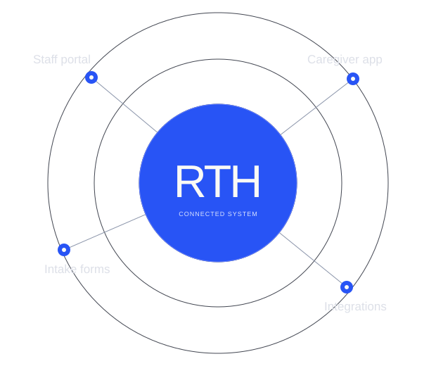

Engineering behind
healthcare staffing.
Contributing to the operational software that connects staffing teams, caregivers, and the work between them.
- My role
- Software Engineer
- Context
- Team contribution · ESA
- Platform
- Web · Mobile · Backend
System overview
Many moving parts.
One connected
operation.
Staffing is a coordination problem: requests, schedules, people, documents, and payments need to stay aligned as the work changes.

Illustrative map · No live or customer data
My contribution
Where I worked
on the system.
- 01
Scheduling & communication
Automated facility-request intake, shift updates, and caregiver notifications across staffing workflows.
- 02
Onboarding workflows
Contributed to document-verification flows, reminders, and staff review processes for caregiver onboarding.
- 03
Payroll & billing
Built TypeScript and PostgreSQL calculation and reconciliation services for payroll and billing reporting.
Engineering focus
The important work
is between the screens.
State changes, integrations, and data consistency connect the user experience to day-to-day operations. This is the kind of engineering I like working on.
TypeScript · React · PostgreSQL · Integrations
Want to talk through the work?
Get in touch for a conversation about my contribution.